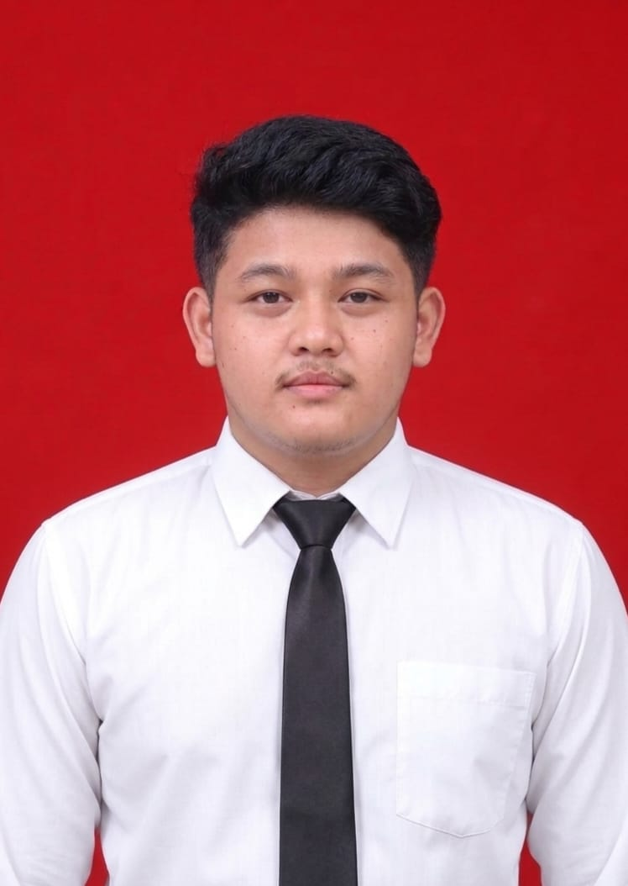
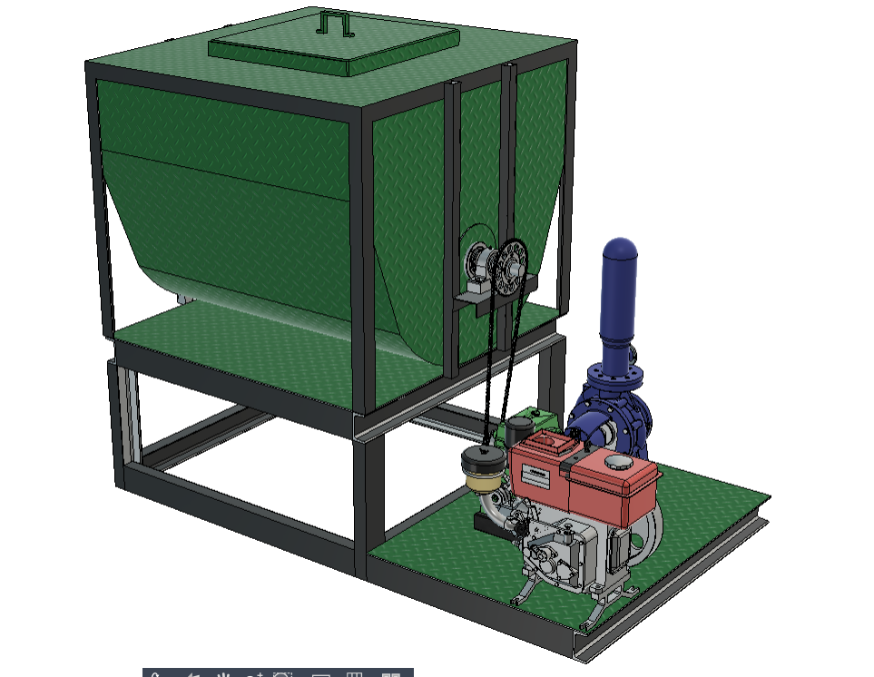

Desain 3D Modeling
Eksplorasi bentuk dan visualisasi komponen melalui pemodelan tiga dimensi.
LULUSAN BARU · TEKNIK MESIN
Menekuni desain 3D modeling dan material, dengan rasa ingin tahu pada bagaimana ide teknis mengambil bentuk.

01 — PROFIL
TENTANG SAYA
Saya Satria Wahyu Putra, lulusan baru Teknik Mesin tahun 2026 dengan IPK 3,14. Fokus saya adalah desain 3D modeling dan material.
Saya tertarik pada hubungan antara bentuk, fungsi, dan karakter material dalam sebuah rancangan. Saya menguasai SOLIDWORKS dan ANSYS, serta mengembangkan portofolio melalui model komponen, peralatan, dan bangunan.
02 — FOKUS
TEKNIK MESIN
Eksplorasi bentuk dan visualisasi komponen melalui pemodelan tiga dimensi.
Ketertarikan pada karakteristik material dan pertimbangannya dalam desain teknik.
03 — SOFTWARE
PERANGKAT KERJA
Desain dan pemodelan 3D
Analisis teknik
04 — PENDIDIKAN
RINGKASAN AKADEMIK
05 — KARYA
PILIHAN PROYEK
Beberapa rancangan yang saya kerjakan menggunakan pemodelan 3D.
 01
01
Rancangan mekanisme penegang belt.
 02
02
Visualisasi model bangunan tiga dimensi.

03Rancangan unit tangki, penggerak, dan pompa.


Model 3D tungku pengering padi, ditampilkan dari dua sudut.